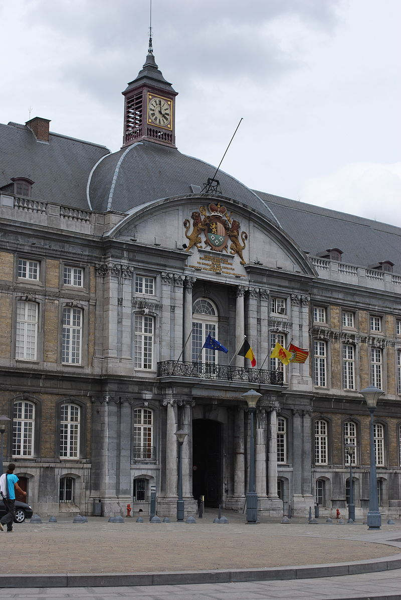
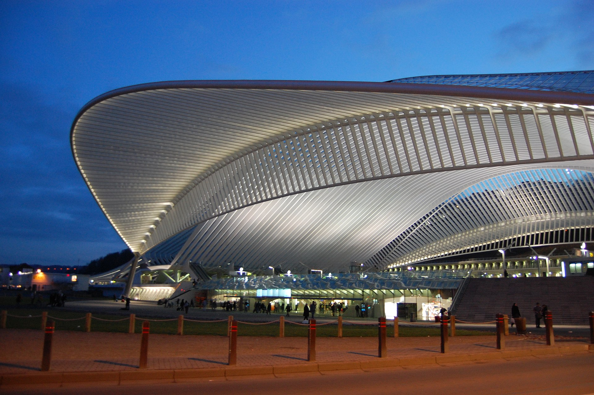

Lieja
Lieja, la 2ª ciudad más poblada de Valonia, suele ser olvidada por aquellos que hacen turismo en Bélgica y considerada como una ciudad de escaso atractivo. Sin embargo, pocos se han tomado la molestia de conocerla para poder juzgar. Quizá no es la ciudad más bonita del país, pero su ambiente nocturno, su aroma latino, su gastronomía y su espíritu abierto y multicultural han conquistado a muchos españoles e italianos que hoy forman allí una gran comunidad. Aquí va mi habitual listado de recomendaciones sobre lugares que visitar en Lieja, con enlaces de interés, datos prácticos y ubicación en un mapa.

Lieja, en plena región histórica de Las Ardenas, es la quinta ciudad en población de Bélgica y la región más meridional de Bélgica.
Actualmente convertido en Palacio de Justicia, el Palacio de los Príncipes-Obispos (Palais des Princes-Évêques) fue construido a mediados del s.XVI con gran mimo y exquisita refinación. En nuestros días no ostenta la belleza de entonces pues sus fuentes, jardines y muchos elementos decorativos fueron destruidos. Sin embargo, aún son dignas de ver su fachada barroca y especialmente su gran patio rodeado por decenas de columnas macizas, cada una con su decoración exclusiva. La entrada al patio es libre.
La Plaza Saint-Lambert es el centro neurálgico de la ciudad. En esta plaza se alzaría hoy una de las catedrales góticas más imponentes de Europa (Catedral de Saint-Lambert) si no hubiera sido completamente desmantelada durante la Revolución Francesa. En su lugar, unas columnas decorativas nos recuerdan el espacio que habría ocupado. Bajo la plaza puede visitarse el Archéoforum, un museo dedicado a las excavaciones que se siguen haciendo en la zona. Por último, conviene señalar que en la contigua Place du Marché se encuentra el Perron, gran símbolo de la ciudad.
La Estación Lieja-Guillemins es la principal estación ferroviaria de la ciudad. Un tiempo atrás la vieja estación no habría tenido interés turístico alguno, pero desde septiembre de 2009 en su lugar podemos contemplar la impresionante estación diseñada por el arquitecto valenciano Santiago Calatrava. Un espectáculo para los ojos.
La Colegiata de Saint-Barthélemy es el edificio religioso más antiguo de la ciudad (s.XII), pero es conocida sobre todo por sus famosas Pilas Bautismales talladas en bronce entre los años 1107 y 1118. Otra colegiata notable es la Iglesia de Saint-Jacques.
INICIO
ACERCA DE
DESTINOS
BLOG
CONTACTO